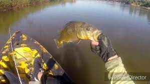
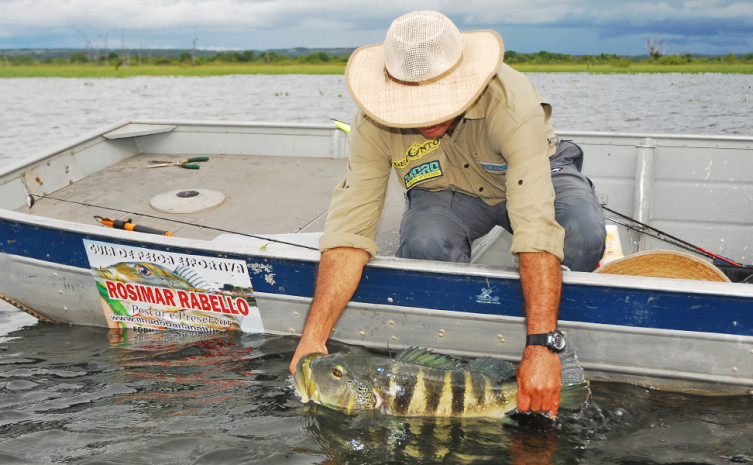

 
Quanto custa uma pescaria no Araguaia?
5 noites e 4 dias (Completo de Pesca)R$ 5.250,00 por pessoa / 2 por barco. 6 noites e 5 dias (Completo de Pesca)R$ 5.950,00
por pessoa / 2 por barco. Diarias fracionadas R$ 1.350,00 por pessoa / Com 2 pessoas por barco. Pesca sozinho no barco = ( Mais R$ 600,00 / dia).
Qual o melhor lugar para pescar no Araguaia?
O Rio Araguaia, ou em sua etimologia “rio das araras mansas”, leva o primeiro lugar quando se trata de pescaria de qualidade,
especialmente na região ao final da Ilha do Bananal. Com mais de 2.000 quilômetros, o rio faz parte da bacia hidrográfica
Tocantins-Araguaia, uma das principais bacias do país.